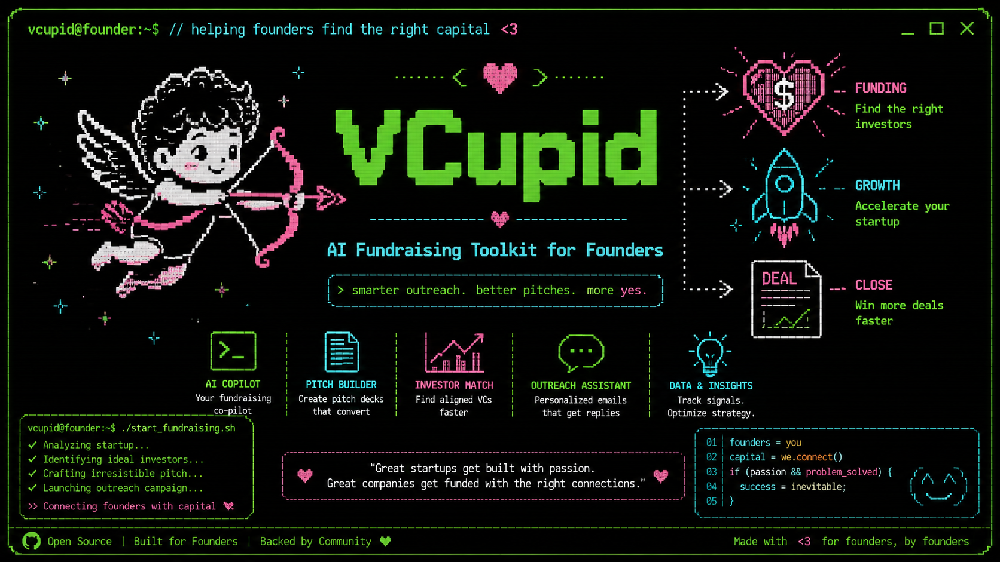

$ /vcposer Acme Ventures Poser Score: 12/100 — active, writes checks ✓ $ /vcmatch Acme Ventures Fit: 84/100 — verdict: Pursue $ /vcintro vcmatch-acme-ventures.md 3 drafts ready: cold · warm intro · LinkedIn DM
/vcraiseFundraising strategy memo: sequencing, milestones, this week's actions.
/vclistTiered list of 15–20 funds ranked by fit with contact angles.
/vcposerSpot zombie funds and tourist investors before you waste a meeting.
/vcmatch8-dimension fit score, portfolio patterns, deal process, warm intro paths.
/vcperksValue beyond the check: credits, brand, expertise, follow-on capital.
/vcpartnerDeep profile on a partner with conversation starters.
/vcintroCold email, warm intro request and LinkedIn DM, in the fund's language.
/vclpFund-specific one-pager framed around their thesis.
/vcdevilThe 10 hardest VC questions, with rebuttal frameworks.
/vcangelYour 10 strongest signals: know what to lead with.
/vcprepTimed 15-minute pitch plan with preemptive diligence answers.
/vcdebriefSignal read, follow-up email and next step, same day.
/vctermTerm sheet clause analysis and ranked negotiation priorities.
/vctrackPipeline dashboard across every fund you're working.
STARTUP_PROFILE.md. Detail in, specificity out./vcraise + /vclist to build strategy and a target list./vcposer then /vcmatch on each fund. Drop the posers./vcpartner, /vcintro, /vclp to reach out./vcprep before the meeting, /vcdebrief after./vcterm when the term sheet lands. Then call your lawyer.claude plugin marketplace add maxoliverbr/vcupid-plugin claude plugin install vcupid@vcupid
Or add it from the Claude plugin directory. Works on claude.ai, Cowork and Claude Code.